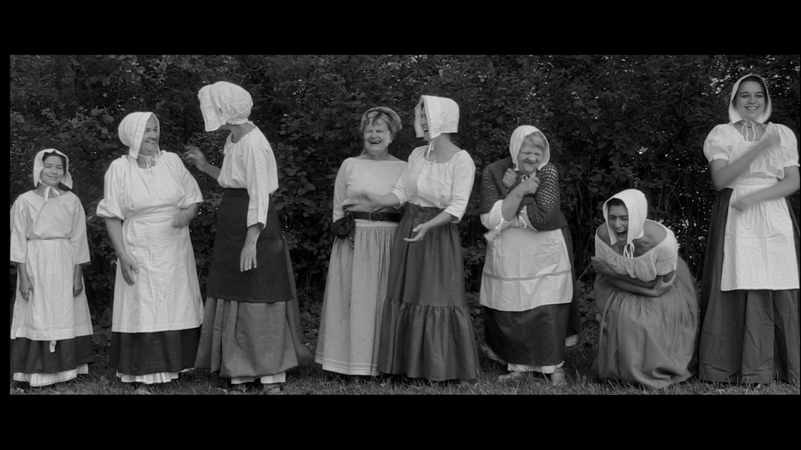

Morte de rire
Docu/Fiction - Fantastique - 55 minutes
Injustement assassinée en 1723, une lavandière revient hanter les villageois-e-s de Villy-en-Auxois...
Terminé cet été 2024, le film a été projeté dans le cadre du festival Evasions des Arts.
Prochaine projection : Vendredi 18 octobre 2024 à 20h30 à la Scie (Salle des fêtes de Villy-en-Auxois). Entrée à prix libre.
Buvette et petite restauration à partir de 19h30
